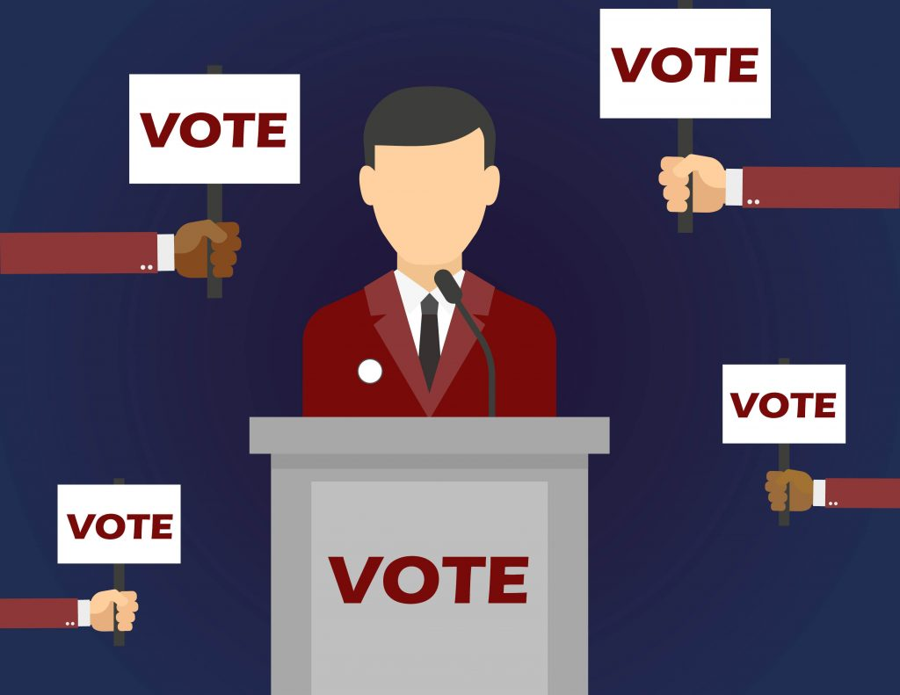
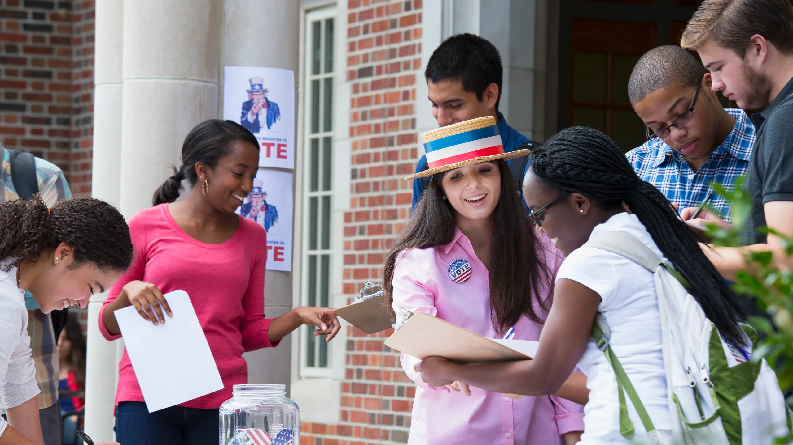
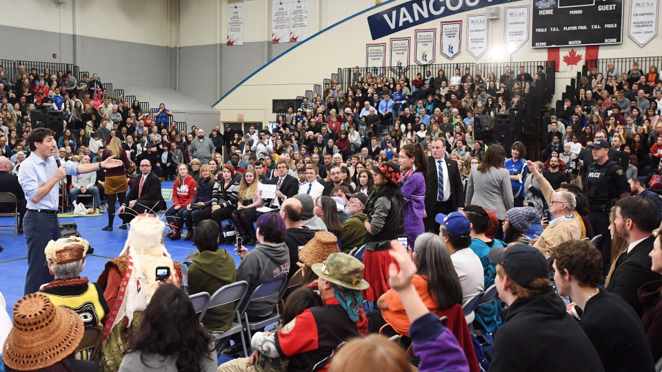
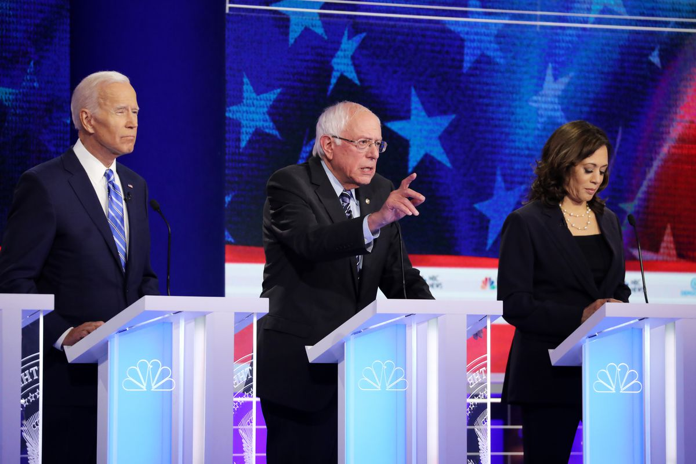
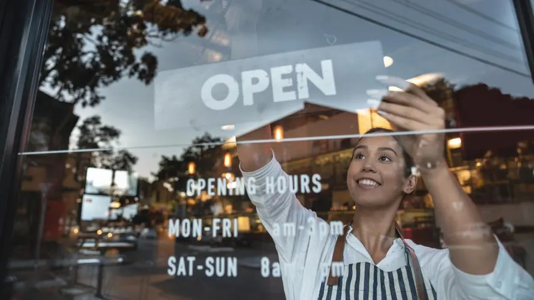
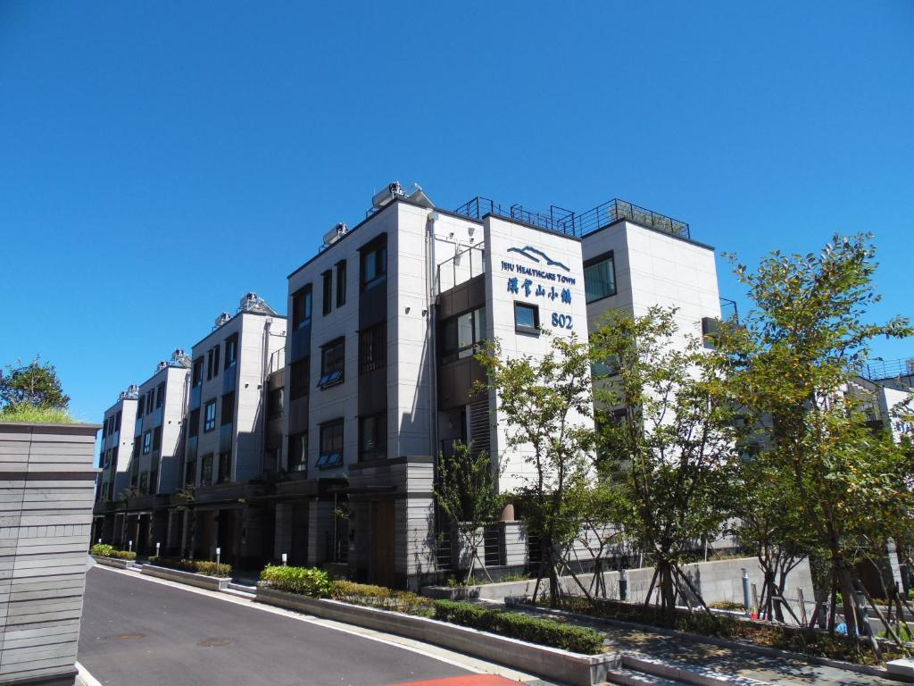

LATEST NEWS
Campaign Kickoff - March 15, 2023
Joe Lewis officially launched his campaign with a dynamic kickoff event, rallying supporters and outlining his vision for positive change.
Community Outreach - April 2, 2023
The campaign team actively engaged with local communities, listening to concerns, and building connections with residents.
Policy Announcements - April 20, 2023
Joe Lewis unveiled comprehensive policy proposals, addressing key issues such as immigration reform, healthcare accessibility, and infrastructure development.
Town Hall Meetings - May 7, 2023
Interactive town hall meetings allowed Joe Lewis to connect directly with constituents, answering questions and discussing solutions to community challenges.
Volunteer Events - May 25, 2023

The campaign mobilized volunteers for various events, fostering a sense of community involvement and grassroots support for Joe Lewis.
Policy Debates - June 10, 2023
Joe Lewis engaged in insightful policy debates, discussing and defending his positions on critical issues, providing voters with a deeper understanding of his platform.
Environmental Initiatives - June 28, 2023
Announcement and discussion of Joe Lewis's plans for environmental conservation and sustainable policies to address climate change.
Education Reform - July 15, 2023
Joe Lewis unveiled a comprehensive plan for education reform, emphasizing improvements in schools, teacher support, and student outcomes.
Small Business Support - August 2, 2023
Joe Lewis highlighted initiatives to support and stimulate local small businesses, recognizing their importance in community development.
Healthcare Town Hall - August 20, 2023
Interactive town hall meeting focused on healthcare, where Joe Lewis discussed his healthcare policies and addressed concerns from constituents.